初到暹罗 · 报平安
吾妻淑柔，展信安康。
随信寄银二十元，以补家用。
我在暹罗一切安好，勿念。
家中老小，劳你多费心。
愿妻儿平安，岁月静好。
—— 夫木生手书
一封侨批，瞒了十八年，
成全了跨越山海、半世深情。
纸短情长，有多长？
长到一封信要走好几个月，长到一生只够爱一个人。
在那个没有手机、没有网络的年代，
一封侨批从暹罗到潮汕，
走的是漫长的海上航路。
也正因为慢，
写下的每一字都是仔细推敲的，
吐露的每一丝情义都是欲说还休的。
A SLOW LOVE LETTER
从前慢。一封侨批要走好几个月，
却装得下半生离索与重逢。
1948年，潮汕。郑木生为躲避抓壮丁，连夜逃离故乡，登上了去暹罗（今泰国）的红头船。
他留下妻子叶淑柔，和三个年幼的孩子。最小的那个，刚会爬。
"暹罗没有春天，热得要死。"千里之外的异国，他用一辆破三轮车踩出了全部的求生之路。一双磨破的鞋，粘了又坏，坏了又粘；他攒了好几年钱，预备做回家的盘缠，却在一场大火里为救同乡的父女，全部化为灰烬。
木生不识字，每一封寄回家的"批"都要请同乡代笔。可他几乎每封信都以"吾妻淑柔，展信安康"开头。剩下的，是简明扼要的交代。
在那些平安批里，木生对自己的苦难只字不提，只说"一切安好，勿念"。这是那个时代无数"下南洋"华侨的共同写照：报喜不报忧，把所有的苦咽进肚里，把仅有的甜寄回家。
"暹罗日猛，通身热热。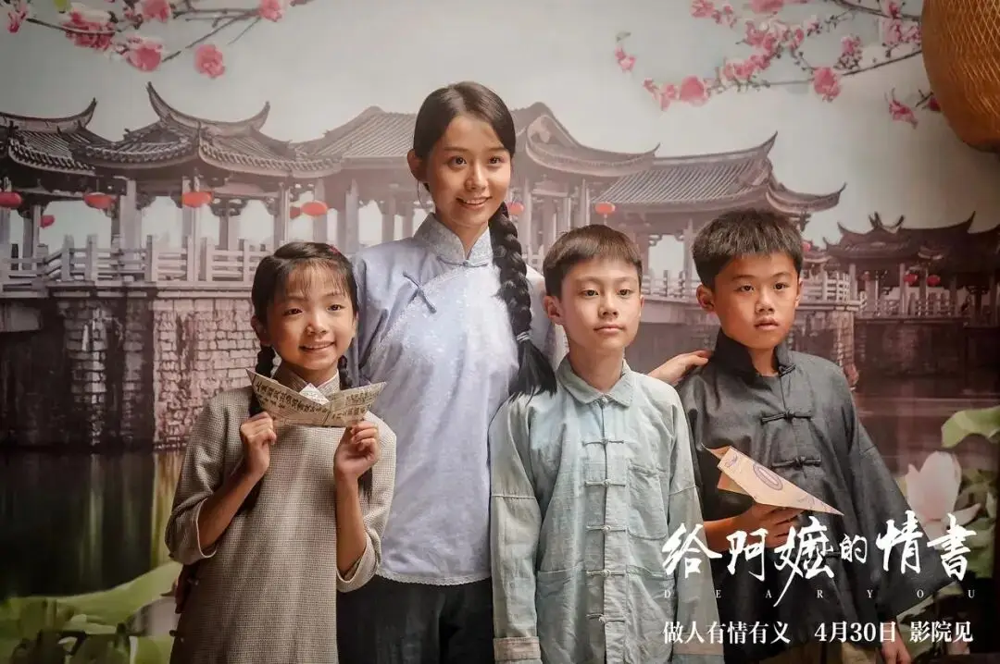
淑柔也不说自己的苦，只在信里写"家中一切安好，勿念"。她把思念藏在最朴素的日常里——
"冬至将至，虽你未能归，那个温柔的潮汕女人，用最克制的笔触，把日子过成了一首又一首的平安歌。
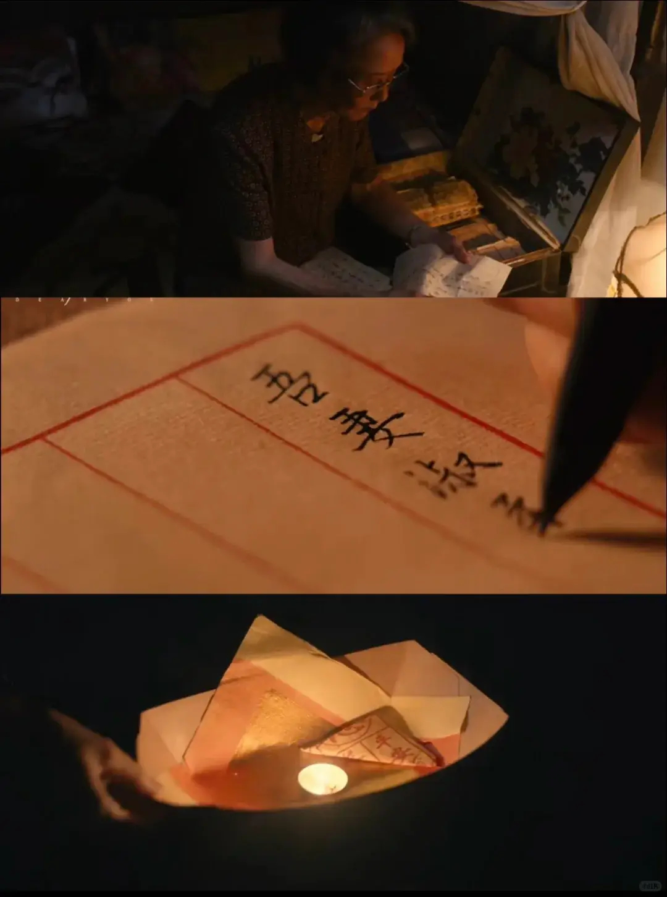
1960年七夕夜，为抵抗劫掠、救同胞，木生在海上勇斗歹徒。重伤后落水身亡，尸骨无存。
而那一夜，远在潮汕的淑柔梦见木生归来。她在给他的信里写——
"七夕当夜，你衣锦归来，有些告别，是没有来得及说出口的。
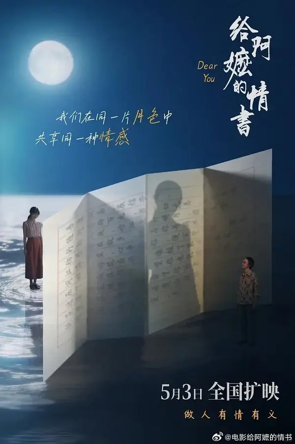
谢南枝，本打算寄一封讣告。但她在银信局的柜台前，看到父亲焦急写信赎回被卖的女儿，看到青年凑不出寄钱回家，同乡把散钱塞进他掌心——
她把那封讣告收回了，换成了以木生名义的平安批：
"行船入夜，恰江上升明月，南枝一人扛起了养两个家的重担。这是淑柔的信里"等一个永远不会回来的人"的坚守，也是南枝信里"替一个死去的人继续爱下去"的承诺。
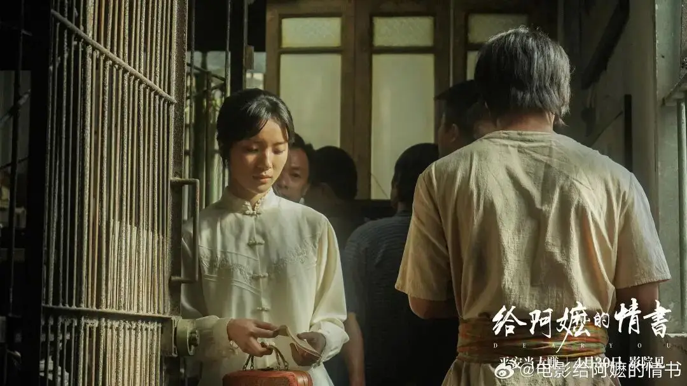
18年后，南枝寄出那封坦白真相的长信。却恰逢台风天，邮差从河里捞起时，信上的字迹已被水冲得无法辨认，只剩下一张照片——木生、南枝和一群孩子的合影。
淑柔只收到照片。她以为，远渡重洋的丈夫已在暹罗另组家庭、生儿育女。
她没有歇斯底里地控诉"负心"，只是将照片放于身旁小几上，轻笑一声——
"现在才告诉我。"她干脆利落地搬家、断联，不允许子女再与木生有任何联系。她对木生的爱是赤诚的、骄傲的、刚烈的。
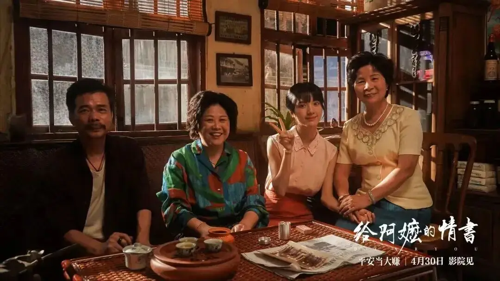
孙子晓伟，债务缠身，本想去泰国找"富得流油的阿公分几百万"。可这趟寻亲之旅，最后竟成了他的成长之旅。
当孙子在视频电话里告诉淑柔全部真相时，她没有崩溃大哭，也没有感激涕零。她只是转身走入厨房，说——
"橄榄菜凉了，可以装好带给南枝了。"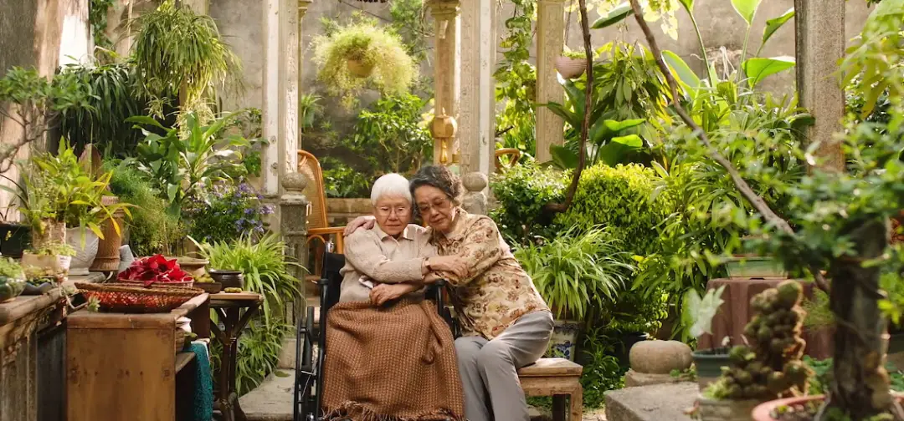
几天后，80多岁的淑柔坐上飞往泰国的飞机，去到了木生生前"需要坐一个月的船"才能抵达的土地。
她接南枝，也接木生回家。
两个女人的第一次相见，没有激动不已、痛哭流涕：
淑柔给满头银发且已失智的南枝淑柔答："收到了，好吃。"
南枝说："好吃我就再给你寄。"
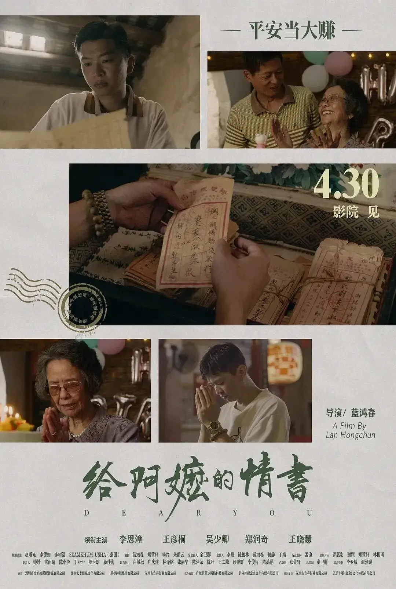
从1948到当下，
三代人的离散、误解、相守与重逢。
"批"在潮汕话里是"信"。
这是银信合一的家书，是装在信封里的半生。
吾妻淑柔，展信安康。
随信寄银二十元，以补家用。
我在暹罗一切安好，勿念。
家中老小，劳你多费心。
愿妻儿平安，岁月静好。
—— 夫木生手书
暹罗日猛，通身热热。
速寄相片来，以解相思之苦。
淑柔吾妻，付去港币五十元。我一切平安，你免挂念。
—— 夫木生
淑柔吾妻，见信安康。
与妻一别，八载有余，日思夜想，归期遥遥。
唯化思念作拼搏，凭勤俭来立业，今把三轮换货船，终得扬帆起航。
暹罗虽远，心有所寄，身若比邻。
江海有岸，团圆可盼。
—— 夫木生
吾夫木生，
信件及家用已悉数收到，家中诸事皆顺，庄稼长势尤好，番薯肥美壮实。
昨日将其烤作晚餐，孩子们十分喜爱。
大弟最馋嘴，半夜摸黑，又偷啃番薯，声响吵醒我们。大妹气得直跺脚，细弟更是严厉，强开其口，务必查明罪证，终于水落石出。
不过多时，三人又嬉闹起来，待鸡鸣声响，方才睡去。
望你见此，定能感同身受，因这三个天真可爱的孩子，倍感幸福。
—— 妻，淑柔
木生吾夫，
五十元收到。家中一切安好，勿念。
冬至将至，虽你未能归，冬至丸亦留你一份。
打了新被棉，眠床烧烧，不畏天寒，你免挂念。
待你归来，再一同看正月的花灯。
—— 妻，淑柔
吾夫木生，展信佳。
一百元已收到。
七月初七，大妹出花园，已亭亭玉立；大弟和小弟亦个头出挑，健朗聪慧。
见子女茁壮成长，欣慰非常，这是你我共修之骄傲。
七夕当夜，你衣锦归来，仍是少年模样。
梦醒行至寨门前，闻溪水潺潺，方觉夜深。
念你安康，好梦，即已知足。
—— 妻淑柔字
吾妻淑柔，展信安康。
随信寄二百银，我一切无恙，生意昌顺。
行船入夜，恰江上升明月，圆如玉坠，仿若身在故乡，似与你并肩共赏。
江海万里，心中念你，便不觉遥远。
湄南河畔木棉花盛开，像极了家乡的春天，压了一朵在信中，望你也能闻到花香。
近来握笔练字，学会了你的名，虽然潦草，努力数日定会成功。
纸短情长，伏惟珍重。
—— 夫木生字
（此为南枝在木生头七那夜提笔写下的第一封代笔信）
淑柔姐姐，
此生有你，无憾。
暹罗在这头，唐山在那头，你在我心里头。
暹罗虽远，心有所寄，身若比邻，切要平安，即为团圆。
往后切莫孤勇，平安为要。
谁言女子之肩膀不够伟岸，为母则刚，恰似你的样子。
—— 妹，南枝
那是一封南枝本打算寄出的讣告。她在柜台前排队时，目睹了银信局里形形色色的潮汕同乡：
有父亲焦急写信回家叫妻子赎回被卖的女儿；
有青年凑不出寄回家的钱，同乡把散钱塞进他掌心……
这些画面让南枝动摇。她想，那个在潮汕老家独自养活三个孩子的柔弱女人，若是得知丈夫的死讯，要如何度过漫长的余生？
那封讣告最终被她收回。
取而代之的，是冒木生之名写下的第一封侨批，以及十八年的相守不弃。
—— 憾未搜到原文。但"情"已尽在其中。
据影片美术组介绍，剧组按照真实历史侨批档案，
共还原了数百封侨批，每一封均由美术老师亲笔书写。
其中呈现在成片中的有二十七封。纸短情长，每一封都是一段岁月。
五个人的半生纠缠，
只为了一句话：做人要有情有义。
没有"下南洋"就没有侨批，
没有侨批就没有这一封封家书。
"有潮水的地方，就有潮汕人。"
—— 潮汕民间谚语
"南洋"，指的是东南亚。自19世纪中叶起，潮汕沿海的青壮年男子为谋生路、避战乱、抓壮丁，携一席行囊登上红头船，远渡暹罗（泰国）、马来亚（今马来西亚）、新加坡、印尼、越南、菲律宾等地。
三段大潮：清末民初、二战前后、1949年前后。据估计，泰国华人约1000万，潮汕人占多数；马来西亚华人约700万，潮汕人亦是重要一支。这些"番客"，成为海外华人中独特的一脉。
影片中木生"踩三轮、卖苦力"的岁月，是那个时代无数底层华侨最真实的写照。"客"字，便有"永远做客"之意——如无根浮萍，永无归依。
"批一封，银二元，几多思念到唐山。"
—— 潮汕侨批民谚
"批"在潮汕话里是"信"的意思。"侨批"又称"银信"，是19世纪中叶至20世纪70年代，海外华侨寄给国内眷属的书信与汇款的合一。它既是一封家书，也是一笔血汗钱。
2013年，"侨批档案：海外华侨银信"入选联合国教科文组织《世界记忆国际名录》，成为人类共同的记忆遗产。从清末的"水客"肩挑手提，到20世纪初专业批局兴起；从汕头、曼谷、新加坡、马六甲的连锁网络，到1950年代后期因历史原因衰落——侨批业走过了近百年。
一封侨批，装得下对妻儿的思念、装得下对父母晚年的孝心、装得下对子弟读书的期盼。它是华侨对家国最朴素的回答。
— BE A PERSON OF COMPASSION & RIGHTEOUSNESS —
在表达对家人最深切的思念时，他们不说"我想你"，只说——
"江海有岸，团圆可盼。"
在表达对爱人的滚烫深情时，他们不写"我爱你"，只写——
"暹罗没有春天，你就是我的春天。"
在表达女儿对父亲的思念和盼归之情时，只随信寄去一只——
纸飞机。
让镜头替我们记下，
那些欲说还休的瞬间。
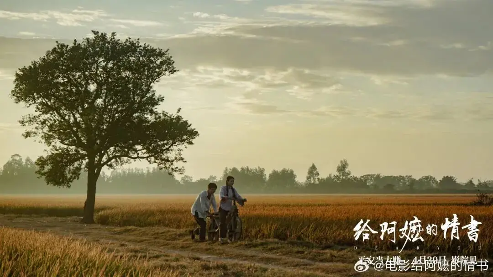
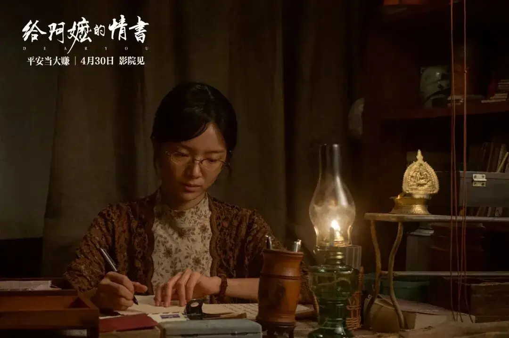
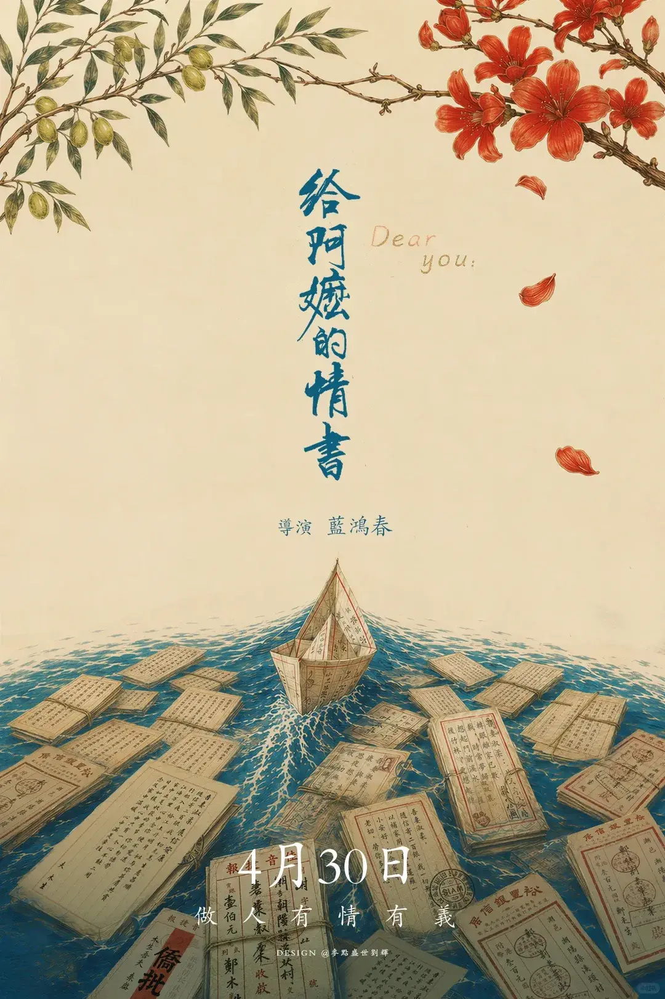
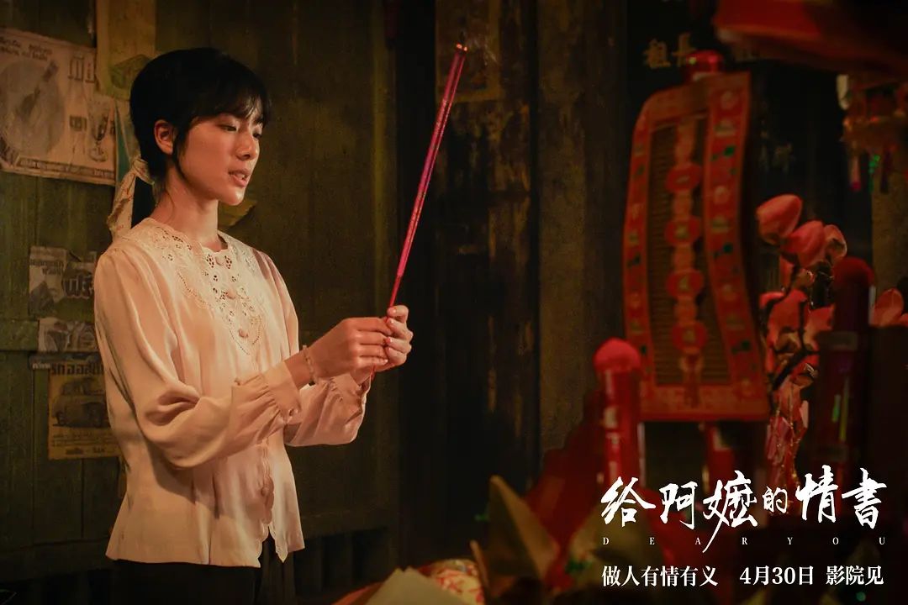
《给阿嬷的情书》拍得隽永克制，
而我，在观影后哭得不能自已。
这部电影最打动我的，不是哪一个撕心裂肺的转折，而是那些欲言又止的瞬间。
淑柔收到那张"全家福"、误会木生已在暹罗另组家庭时，她没有歇斯底里地控诉他"负心"，只是将照片放于身旁小几上，轻笑一声"现在才告诉我"。这是何等的骄傲，又是何等的深爱。
"人不怕穷，不怕远，也不怕死，怕的是无人牵挂，没人惦念，无家可归。"现在的电影，很多都以"炫技"作为噱头，似乎没有大明星、大制作，电影就没了卖点。而《给阿嬷的情书》炫的最酷的"技"，是克制。
在表达对家人最深切的思念时，他们不说"我想你"，只说"江海有岸，团圆可盼"；在表达对爱人的滚烫深情时，他们不写"我爱你"，只写"暹罗没有春天，你就是我的春天"；在表达女儿对父亲的思念和盼归之情时，只随信寄去了一只纸飞机。
这种留白式的表达，让整个影片呈现出一种隽永、温柔的文学气质。文学自带沉静的力量——它不急于倾诉，不煽情，不作评判，只是安静地呈现。
"纸短情长，有多长？长到一封信要走好几个月，长到一生只够爱一个人。"他们的浪漫，不是鲜花与誓言，而是一朵压在信纸里的木棉花、一碗即便没人吃也要留一份的冬至丸、一辆用木头手搓而成的自行车——这种属于从前人的慢和浪漫，是这个只要给AI输入一个指令就能自动输出一大段"漂亮文"的时代所稀缺的。
我们喜欢《给阿嬷的情书》，不仅仅因为它的情感真挚动人，也因为羡慕片中人曾被他人那样珍重地对待过。
而这，是我们求而不得的。
人生有尽，
情义无期。
愿你读到这里，
也有人正为你，
写着一封穿越山海的家书。
A FILM BY LAN HONGCHUN · DEAR YOU
4·30 · 平安当大赚 · 做人 有情 有义